|
|
HELP FIND THE FOLLOWING LOCATIONS
PAGE 12
GIDEON’S WAY: The Firebug (Roy Baker: September 1964)
(Identified by Stephen Carter, August 2007)
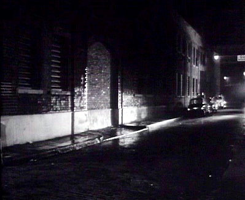
Unknown 2 – Keen () borrows bicycle from child to time journey from arson site to local telephone boxes.


Unknown 3 - Keen sets off on his borrowed bicycle.
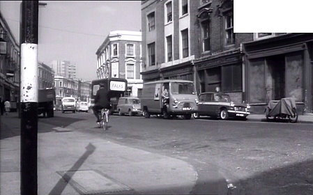 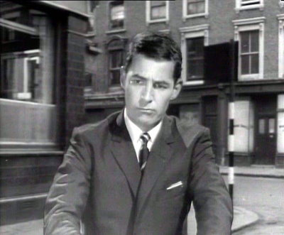
Unknown 4 – Keen () comes at last to the phone box.

 Jaz Wiseman –
“Unknown 2,3 4 and 7 all look like being around Ladbroke Grove, Notting Hill to
me.”
Jaz Wiseman –
“Unknown 2,3 4 and 7 all look like being around Ladbroke Grove, Notting Hill to
me.”
Unknown 5- The funeral of Constable Jarvis, Bishop () and Gideon () are both present.
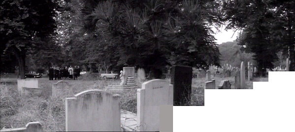
(Spotted by Jaz Wiseman, January 2006)


(Identified by Wyn Roberts, June 2007)

 It is what it
says on the box – but we had to check!
It is what it
says on the box – but we had to check!
Unknown 7 - Tom Bishop (George Cole) goes back to his digs with the new scooter.

Unknown 8 - Tom Bishop (George Cole) goes to the Atlas Paint co to start a fire.


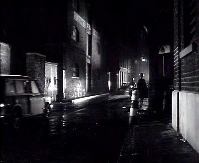
Unknown 10 - Fire brigade responds to the fire.
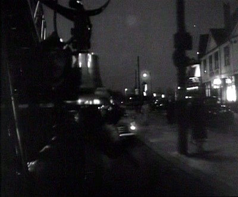 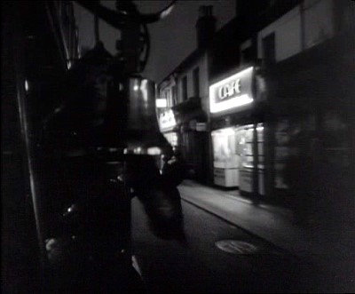 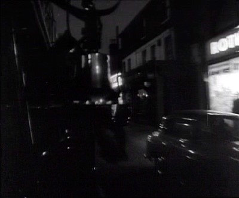
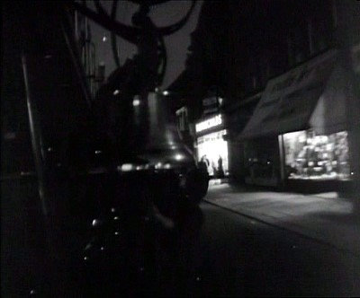


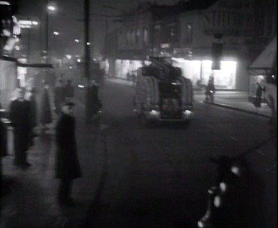 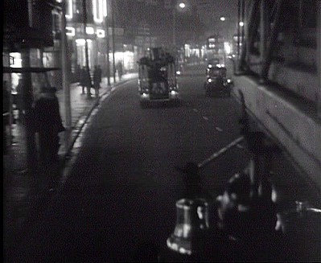
Redbourne Quarry - Tom Bishop (George Cole) goes to the quarry on his scooter to steal explosives. As he leaves he is spotted by Bill White (Joby Blanshard). Later (Brian Weske) goes to Mr White to make a bet.


Redbourne - Tom Bishop (George Cole) stops off on his way from the quarry to read a paper at a local shop.

Kensal Road,
W10 - Gideon
receives a report about Tom Bishop buying a motor scooter just as Bishop is
travelling home with high explosives.
(Spotted by Jaz Wiseman, January 2006)


(Spotted by Jaz Wiseman, January 2006)

Kensal Road, W10 - Scooter hunts out first target.
(Spotted by Jaz Wiseman, January 2006)


 This is Unknown 11 again – is
this a continuation of the St. Pancras Way footage?
This is Unknown 11 again – is
this a continuation of the St. Pancras Way footage?
Mornington Place - Tom Bishop (George Cole) rides his scooter up
(Spotted by Jaz Wiseman, January 2006)


Kensal Road, W10 - Scooter prepares to throw the first stick of dynamite.
(Spotted by Jaz Wiseman, January 2006)


Charrington Street, NW1 - Gideon and Keen are driving through


Albert Embankment SE1 -
(Identified by Alan Field, August 2007)

Golbourne Road W10 - Two policeman cross the road from the Earl of Warwick pub to a police
call box to call in on the whereabouts of Tom Bishop
(Spotted by Jaz Wiseman, January 2006)

St. Pancras Way, NW1 - Gideon Calls Out all available officers from car to seal off the area.

St. Pancras Way, NW1 - Scooter past Linotype and Machinery Ltd.,


The Village Inn, 265 Kensal Road, W10 – Bishop on scooter passes “Lads of the
Village” pub and throws explosive.
(Identified by Stephen Carter and confirmed by Jaz Wiseman, July 2007)

Turns right after St. Pancras Wayon to Crowndale Road, NW1 – Bishop rounds a corner on his scooter.


Royal College Street, NW1 - Gideon waiting at Red Lion corner and sees scooter pass

Gideon is sitting in his car on Pratt Street, NW1


 The pub on the corner is The
Golden Lion – thanks to ‘Professor Harbottle’ of Professor
Harbottle’s Encyclopedia of Brilliant Things
The pub on the corner is The
Golden Lion – thanks to ‘Professor Harbottle’ of Professor
Harbottle’s Encyclopedia of Brilliant Things
On to

 Stephen Carter - I took a few
snaps of Georgiana Street (with 'The Constitution' looking remarkably
unchanged), 'The Golden Lion' on the corner of Pratt St and Royal College St
(Gideon's car turns right from Pratt St into RC St) and St Pancras Way.
The Atlantic Steel Co. is gone now of course, and most of the buildings are
different, but I think the bollards are the same!
Stephen Carter - I took a few
snaps of Georgiana Street (with 'The Constitution' looking remarkably
unchanged), 'The Golden Lion' on the corner of Pratt St and Royal College St
(Gideon's car turns right from Pratt St into RC St) and St Pancras Way.
The Atlantic Steel Co. is gone now of course, and most of the buildings are
different, but I think the bollards are the same!
Georgiana Street, NW1 - Gideon follows around corner but his car is blocked by a truck.

 The Constitution, 42 St. Pancras
Way.
The Constitution, 42 St. Pancras
Way.
Unknown 17 - Gideon follows
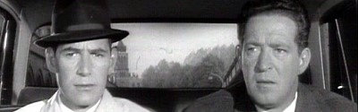
(Identified by Geoff Dodd, November 2007)
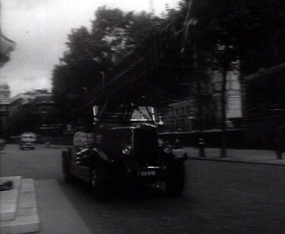 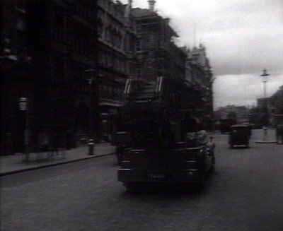
Unknown 19 - Gideon back on the trail again.

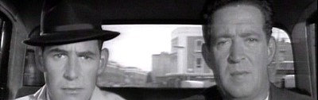
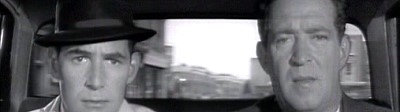

 Could be Golbourne Road, with
Earl of Warwick in the background.
Could be Golbourne Road, with
Earl of Warwick in the background.
St. Pancras Way, NW1 - Scooter passes

St. Pancras Way, NW1- Bishop () on scooter realizes he is probably out of options.


Mornington
Terrace, NW1
Goes down side street
(Identified by Wyn Roberts, June 2007)

Unknown 22 -
Bishop () on scooter goes along footpath -Travelling along “


 This looks like it could actually
be behind the Atlantic Steel Co. Ltd.
This looks like it could actually
be behind the Atlantic Steel Co. Ltd.
Unknown 23 - Keen reverses the car out of the cul-de-sac.
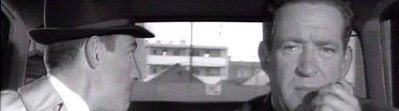
Regina Street (Demolished) NW1 – Tom Bishop (George Cole) on scooter arrives at old burnt-out house. Keen () and Gideon () are not far behind but arrive too late.


 Church tower seen in right of
second photo is All Saints,
Church tower seen in right of
second photo is All Saints,
Stephen Carter – “I've been
looking slightly further north in
Think you know a spot? Need a bigger image? Email me.
< Previous | Index | Avengerland | Next >
Copyright © 2003 Anthony R. McKay